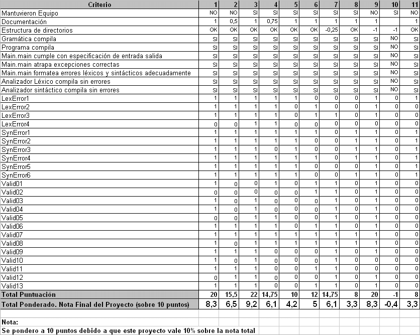

Traductores e Intérpretes UCAB : Resultados de Evaluación Proyecto I. (Prof. Carlos Gonzalez)
This page last changed on Jan 08, 2007 by carlos.gonzalez.
Resultados de evaluación
La siguiente tabla muestra los resultados de la evaluación realizada sobre el primer proyecto:

Criterios de corrección
Para la evaluación de los proyectos se ejecutaron 23 casos de prueba, cada uno de los cuales vale un punto, adicional a los casos de prueba, se considera un punto para la documentación.
Los requerimientos de forma, no suman punto en la evaluación, sin embargo tienen una penalización para aquellos equipos que los incumplieron. En cada caso la penalización es de 1 punto.
La nota total fue ponderada a 10 puntos, ya que el proyecto tiene un valor de 10% sobre la nota total.
Los casos de prueba utilizados se encuentran disponibles en el archivo: Casos de Prueba.zip
Equipos de Proyecto
| Equipo | Integrantes |
|---|---|
| 1 | Belenice Herrera Isaac García |
| 2 | Manuel Sanchez Wullman España |
| 3 | Vannesa Salgado Francisco Seisdedos José Antonio Perez Rosmaira Arvelo |
| 4 | Alejandro Pietrini Anherlim Contreras Ruben Lopez Josue Hernandez |
| 5 | William Bettencourt Alonso Lamas Yineth Nuñez |
| 6 | Alejandro Campos Daniel Pellegrini Mairim Gonzalez Doreliz Graffe |
| 7 | Yonayli Gutierrez Maria Morelia Alcala Michelle Herrera |
| 8 | Fernando Da Silva Jose Vasquez Gustavo Troconis Jose Cirigliano |
| 9 | Salvador Rodriguez Jorge Pires |
| 10 | Manuel Ibarra Santiago Moreno Dayana Pereira Zoany Marcano |
| 11 | Marina DaSilva |
{kind=link}
{kind=link}
{kind=link}